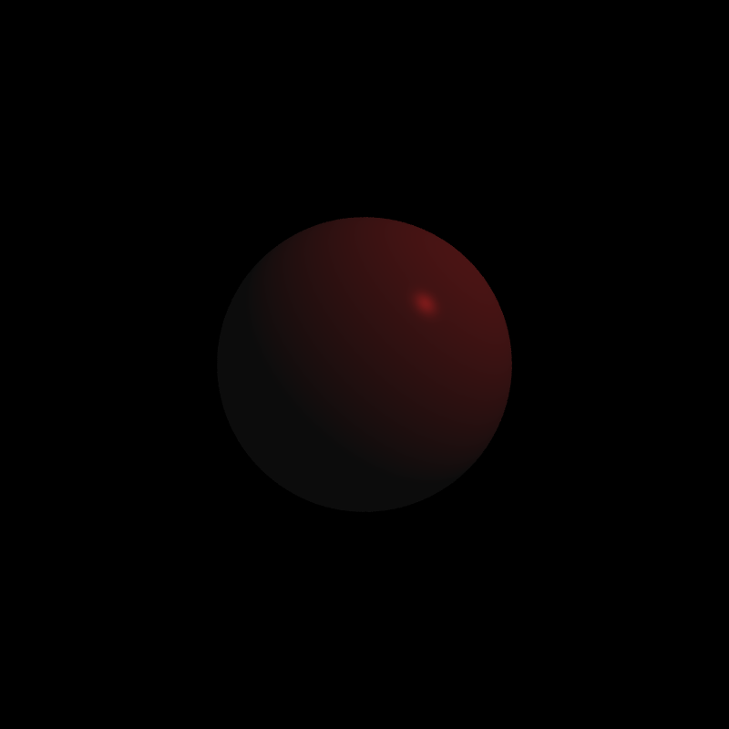
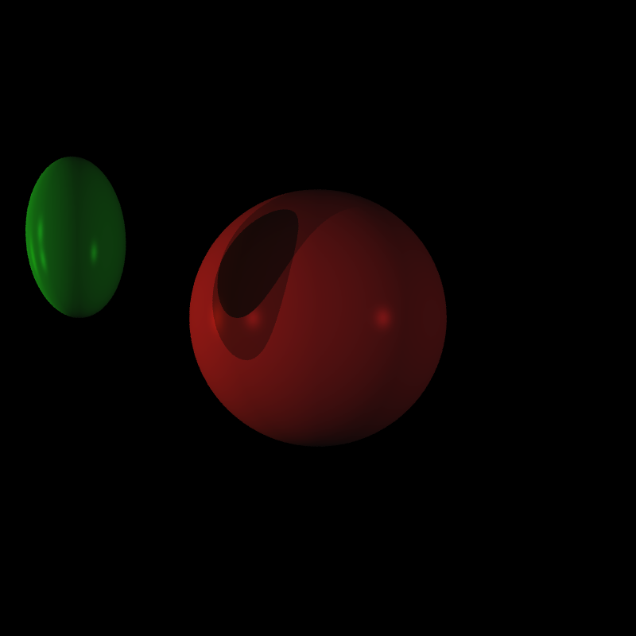
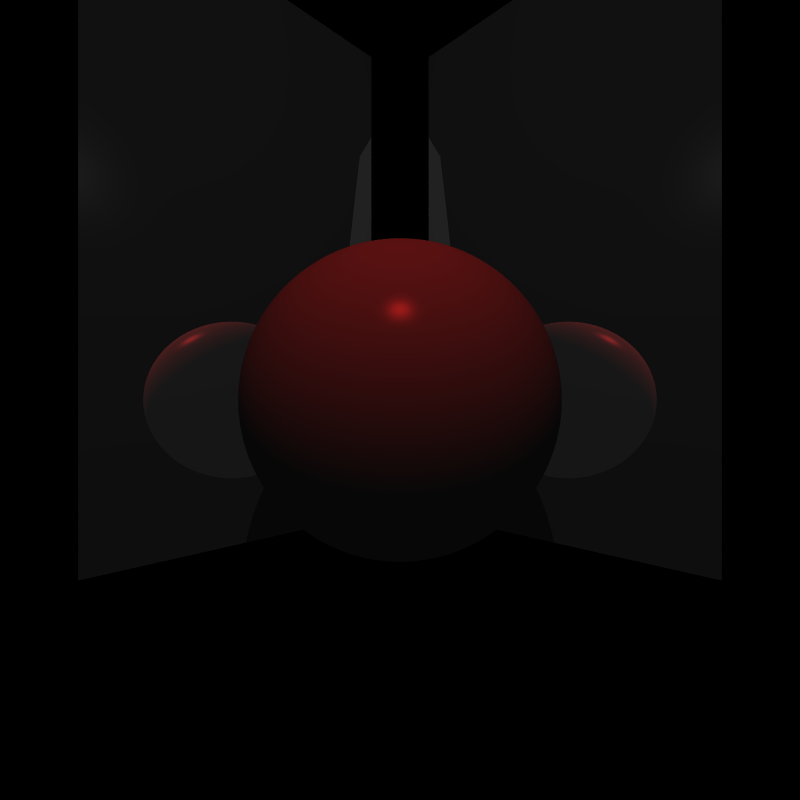
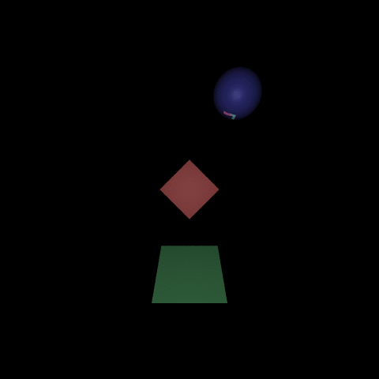
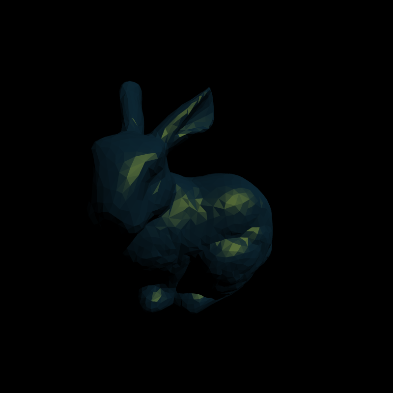
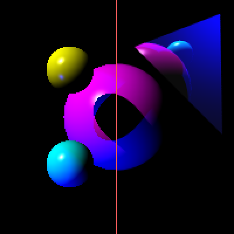

basic ray tracer
In Fall 2016, I implemented this basic ray tracer from scratch in C++ as a project for UC Berkeley's graphics class (CS184). Here's the source.
Below are some of the features I implemented.
Phong shading |
|
|  |
A single point light illuminates a sphere using the Phong shading model. Rendered in 2.313 seconds. # phong.txt
cam 0 0 0 -1 -1 -1 1 -1 -1 -1 1 -1 1 1 -1
mat .1 .1 .1 .8 .1 .1 .8 .1 .1 100 .5 .5 .5
sph 0 0 -8 3
ltp 8 8 0 .3 .3 .3 0
lta .5 .5 .5
|
Shadows |
|
|  |
Two point lights on the left of frame cast a green ellipsoid's shadow onto a red sphere. The shadows get darker where they intersect. Neither light reaches this dark area. The lighter shadows can be reached by exactly one of the point lights. Rendered in 5.007 seconds. # moon.txt
cam 0 0 0 -1 -1 -1 1 -1 -1 -1 1 -1 1 1 -1
mat .1 .1 .1 .8 .1 .1 .8 .1 .1 100 0 0 0
sph 0 0 -8 3
mat .1 .1 .1 .1 .8 .1 .1 .8 .1 100 0 0 0
xft -3 1 -4
xfs 1 2 1
sph 0 0 0 .5
xfz
ltp -8 2 0 .25 .25 .25 0
ltp -8 0 0 .25 .25 .25 0
ltp 8 0 0 .25 .25 .25 0
ltd 1 0 0 .2 .2. .2
lta .3 .3 .3
|
Reflections |
|
|  |
Reflective triangles arranged into rectangular planes, reflecting a sphere lit from above. Rendered in 9.927 seconds. # mirror.txt
cam 0 0 0 -1 -1 -1 1 -1 -1 -1 1 -1 1 1 -1
mat .1 .1 .1 .8 .1 .1 .8 .1 .1 100 0 0 0
sph 0 0 -8 3
mat .1 .1 .1 .1 .1 .1 .1 .1 .1 100 1 1 1
xft 1 -4 -14
xfr 0 -40 0
xfs 8 16 1
tri 0 0 0 1 0 0 0 1 0
tri 1 1 0 0 1 0 1 0 0
xfz
xfs -1 1 1
xft 1 -4 -14
xfr 0 -40 0
xfs 8 16 1
tri 0 0 0 1 0 0 0 1 0
tri 1 1 0 0 1 0 1 0 0
xfz
ltp 0 10 0 .4 .4 .4 0
lta .3 .3 .3
|
Transformations |
|
|  |
I figured the best way to show transformations in action would be to set up a transformation tween, so here an animation. The cube is an OBJ file I made. It's rotating on the X and Y axes at different frequencies. Each of these 64 480×480px frames took about 16 seconds to render, coming out to a total of 1024 seconds (about 17 minutes). |
OBJ file parsing |
|
|  |
It's the Stanford Bunny! Rendered in 10448.041 seconds (about 3 hours). # bunny.txt
cam 0 0 1 -1 -1 0 1 -1 0 -1 1 0 1 1 0
mat .1 .1 .1 .1 .3 .4 .6 .6 .1 10 0 0 0
xft 0 -3 -6
xfr 0 20 0
xfr 30 0 0
xfs 2 2 2
xfs 16 16 16
obj "models/bunny.obj"
xfz
ltd -1 -1 -1 .5 .5 .5
lta .5 .5 .5
|
Anti-aliasing |
|
|  |
The simplest approach to ray tracing is to cast a single ray at the center of each pixel. For far away or complex scenes, this may produce aliasing (left). The solution to this problem is to cast multiple rays per pixel and to jitter them to avoid further aliasing, then average together the values from each raycast (right). The image on the left was created by rendering the same scene twice at 200×200px without and with anti-aliasing, then superimposed in Photoshop and upscaled for effect (no interpolation). |
Copyright 2016 Alex Yang